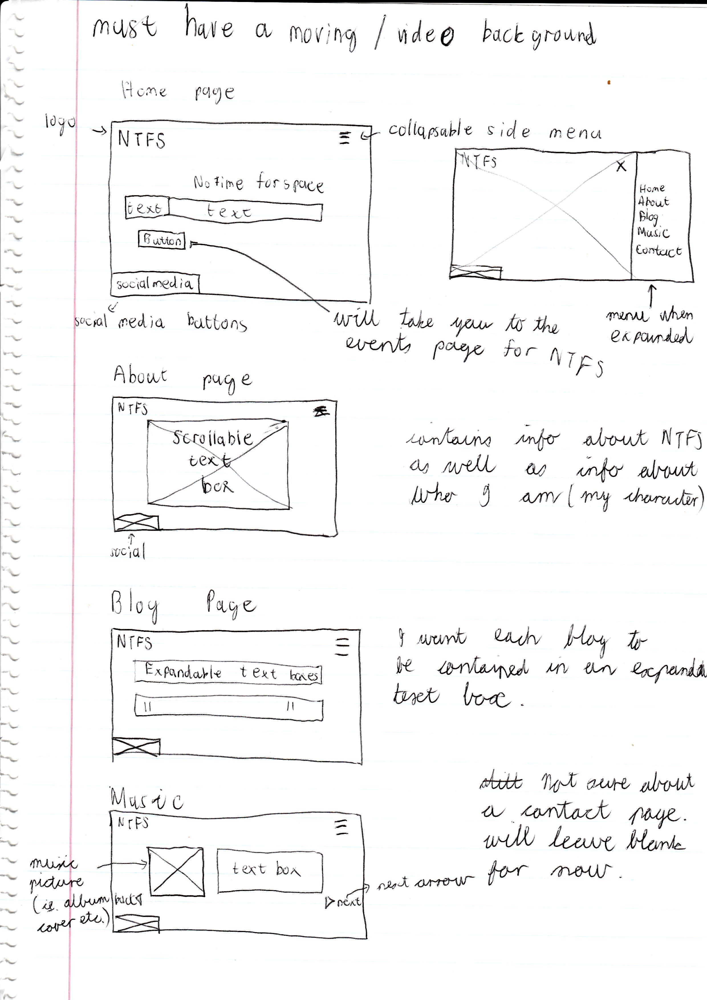

No Time For Space is a movement.
We are an open ended collective, based in Johannesburg South Africa that is trying to uplift and shine a spotlight on multiple creative disciplines within the South African Artistic Industry.
Our goal is to fill the vacant spaces of SA's creative industry with genuine expression that is free of judgement.
We will be bringing a number of music and artistic events to Jozi, in which the talented minds of our city will be able to share their creations and express themselves freely.
WHO IS NTFS?
NTFS was created by a group of 6 individuals from the Johannesburg area. Each were a unique and talented mind that
desired to express their creativity and passion. And so on the 5th of March 2021, this group of individuals came
together and officially released NTFS to the world.
These 6 individuals are:
Juan Pierre
Juan Pierre is the founder of NTFS. He believes in uplifting the local community in all different forms of art. He also
believes that boundaries are there to be broken, no matter how subtle the fracture.
Juan Pierre has been
establishing himself at the forefront of Jozi's modern techno movement - an ever-present demonstration of the city's
musical potential.
His style is relentlessly forward thinking - constantly pushing in unconventional and
adventurous ways that have become something of a signature aesthetic. Juan Pierre's performances integrate and tangle
elements oftechno, breakbeat and ambience whenever there's a pause for a breath. His aim is to provide meaning to the
music being played, creating different textures and atmospheres for the listeners to submerge themselves in.

Shaylin
Shaylin has always believed that art is the most genuine form of expression, a way to communicate without a need for
explanation. She dreams of being part of the art industry in as many ways as possible and promises to surprise us in the
near future.
She hopes that this collective NTFS can shine a light on unseen artists and provide a platform where they feel
comfortable enough to share their art.
Camron Rex
Camron Rex feels that music is a very personal vault of emotions for him thus sparking the want to be a DJ. He aims to
curate an experience between the listeners and the dance floor, whilst sharing a piece of himself.
His biggest
inspiration is his mentor Juan-Pierre as well as the other members of the NTFS crew.
As a member of NTFS Cameron
would like to create an escape for the people in SA whilst going through these trying times. "We still have art, and
that can never be taken from us."
Cameron Shreurs
Cameron has a very layed back, easy going and friendly personality. He tries to show his creative mindset through the
music he plays and the fashion he designs.
His goal is to portray fashion in a different light, bringing weird
and cozy vibes to all the viewers and wearers. Cameron took an interest in DJingg in 2020 and wants to bring sounds
of Tribal, electro and break-beat to the scene. He hopes to take people on a hypnotic journey with the sounds he's
hoping to put out.
Ethan Lawrence
Ethan Lawrence better known as Ethans.wav is an up and coming dj - he has been developing his style in the techno scene
with a new sound such as break-beat and electronic dance to fit the underground vibe. His music curation brings
interesting technical sounds intertwined with ambience which sends his listeners on a journey through the ether. He
loves to showcase groovy and bouncy baselines to calm vibrant atmospheres through his main focus - House Music.
His love for Techno was kickstarted the first night he discovered TOYTOY and the influence is recognized in his enticing
mixes.
His inspiration consists of Marcel Dettman,Cassegrain, DVS1 and many others.
Camron909
Camron, a British-born producer and dj. Aims to form sounds and rhythm that speak to the soul, creating raw/fast textures with a touch of smooth groove. This is his form of body music, providing distinctive, warm vibrations that flow through the room. He thrives in dark spaces, when the crowd possesses the right convivial energy. Camron strives for experiences where the love for the art is with the listener, where differences don’t matter and we all become one. His goal is for the listener to take back something different from each and every set/production, whether it be an ideal thought, or why the set differentiates from the last. This allows him to constantly develop his sound throughout these experiences. “I believe it should always be about the music and not the dj performing”. Although the respect for the artist should always be present. Indulge in his dark frequencies and flows and allow a form of astral projection to emerge.
NTFS presents: Break-fast Club
So far we have hosted one event which occured on the 10th of April 2020. The event was called "NTFS presents: Break-fast club" and it was nothing but a success. It was a night of music and art, where 5 local DJ's came together to play on the evening and they gave us all a delectable taste of what is yet to come. We hope to establish a new scene of techno and break-beat that Jozi has yet to see. On the night 3 local artists got to feature their work along the famed walls of the newtown based club AND. There works were met with great enthusiasm and intrigue, and made a powerful and memorable impact on the evening.
ABOUT ME
So who the hell am I, my name is Alain. Im the guy who made this website, and, all those blog posts. Im a guy who grew up in Benoni South Africa. I'm a website designer and techno music enthusiast and the NTFS crew are my friends. I have been involved with NTFS from the start and have been helping them in the background with set-up, promoting and advertising.
I wanted to help more, in anyway I could, so I designed this website to promote the 'No Time For Space' movement that is taking place in Jozi as we speak. As of this moment there are no currently released website for NTFS so I thought I'd help my friends out by making one for them. I also thought it would be a good way to get into an untouched market. I am truly excited about NTFS and what it has to offer. NTFS is real, it is happening as we speak and we have a lot planned
I share a deep love for free passionate expression, much like the other members of NTFS. I truly believe in what NTFS has to offer and the opportunities it is going to provide for local artists. As an artist myself I believe it is my duty along with each an every one of you to do the most we can to support and love each other.
If you want to get to know more about me, here is a character template that I made for myself, and it will tell you
everything you need to know about me. Just click
here
Annotated wire frames of my website
